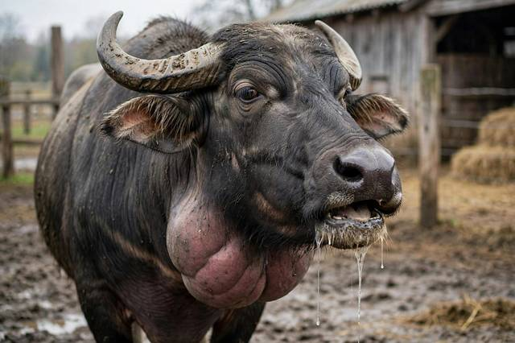
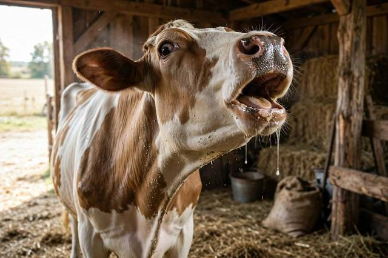
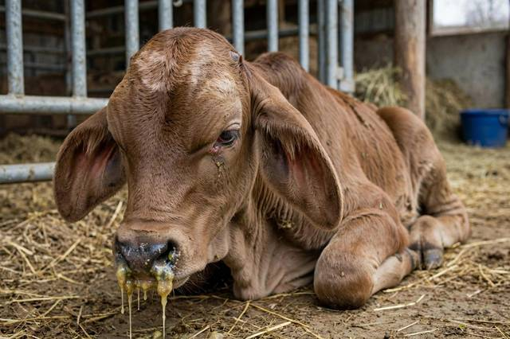
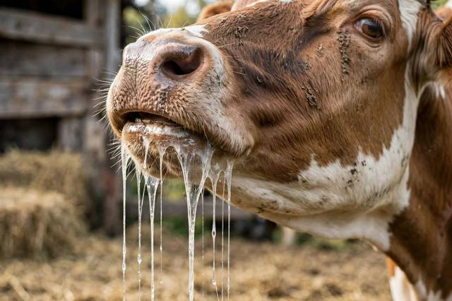
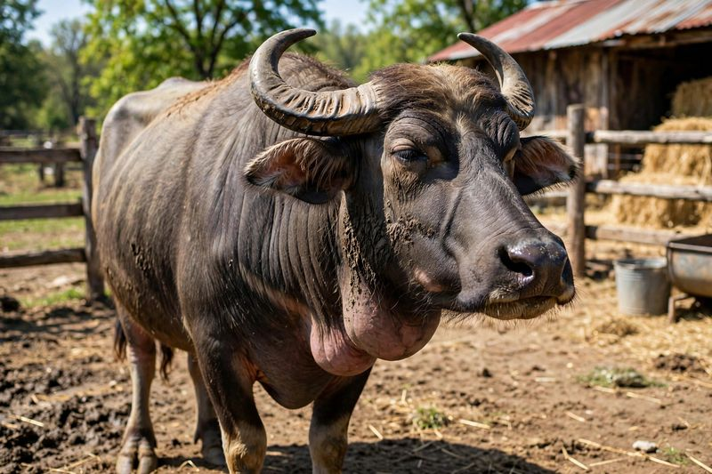

Hemorrhagic septicemia (HS) is an acute bacterial disease that particularly affects cattle and buffalo. It is associated with certain strains of Pasteurella multocida and can progress rapidly, especially in humid and rainy conditions in endemic regions. Buffaloes may be severely affected.
On this page: clinical signs, causes and transmission, diagnosis, treatment principles and prevention.
Clinical Signs
1
Fever(Sudden high body temperature)
2
Dullness(Dull, depressed animal)
3
Loss of Appetite(Refusal to eat)
4
Swelling of Throat and Neck(Swelling around the throat, neck and brisket)
5
Difficult Breathing(Painful, laboured breathing)
6
Noisy Respiration(Loud, noisy breathing sounds)
7
Excessive Salivation(Drooling from the mouth)
8
Difficulty Swallowing(Trouble swallowing feed or water)
9
Rapid Deterioration(Severe cases may die within a short time)
FeverDullnessLoss of Appetite

Swelling of Throat and Neck

Difficult Breathing

Noisy Respiration

Excessive Salivation

Difficulty SwallowingRapid Deterioration
Causes and Transmission
HS is caused by pathogenic strains of Pasteurella multocida. Stress, transport, poor body condition, concurrent disease and environmental conditions may contribute to outbreaks. The organism may be present in the upper respiratory tract of some animals without causing disease.
Pathogenesis
Pasteurella multocida lives harmlessly in the throats of some animals but, under stress (transport, heat, poor nutrition), it multiplies rapidly and invades the bloodstream. The bacteria release endotoxin, which damages blood vessel walls and causes widespread bleeding (haemorrhages) and shock.
Infection of the throat and neck tissues causes the hot, painful swelling that can obstruct breathing. The disease moves very fast — animals may be found dead within hours of the first signs.
Veterinary Diagnosis
A veterinarian considers the speed of onset, characteristic swelling, respiratory signs and local outbreak history. Laboratory testing of suitable samples can confirm the diagnosis. Sudden deaths should be investigated promptly and handled with appropriate protective measures.
Differential Diagnosis
Several conditions can look similar. A veterinarian distinguishes them by the signs, history and laboratory findings:
Black quarter — causes sudden death with gas-filled (crepitant) muscle swelling.
Anthrax — causes sudden death with bloody discharges and blood that does not clot.
Ruminal bloat — causes a distended rumen and breathing difficulty, but no fever or throat swelling.
Acute pneumonia — causes fever and cough with a slower course.
Treatment and Case Management
HS is a veterinary emergency because the disease can progress very quickly. Immediate veterinary assessment and early, veterinarian-selected antimicrobial treatment may be critical. Supportive care and management of breathing difficulty are determined by the attending veterinarian. Do not wait for swelling to become severe before seeking help.
Important: Any suspected HS case with throat swelling or breathing difficulty requires immediate veterinary attention. Do not attempt to treat a rapidly deteriorating animal solely with home remedies.
Recommended Medicines
1
Antibiotic – Oxytetracycline(First-choice antibiotic for the bacterial infection)10 mg/kg IM daily (conventional) — or LA preparation: 20 mg/kg IM/SC once, repeat after 3–4 days if needed
2
Antibiotic – Procaine penicillin G(Alternative antibiotic for the bacterial infection)22,000 IU/kg IM once daily
3
NSAID – Meloxicam(For fever and pain)0.5 mg/kg IV/SC once
4
Supportive care – Multivitamins(To support recovery)10 ml IM daily
⚠ Important Tips:
HS is an emergency — call a veterinarian immediately.
Do not wait for swelling to become severe before seeking help.
Use antibiotics only under veterinary advice.
Vaccinate cattle and buffaloes against HS as advised by your veterinarian.
Injection — vet-administered onlyMedicines — only as prescribed by a veterinarianVaccination — follow the vet’s schedule
Prevention and Farm Management
Vaccinate according to the local veterinary authority's schedule and vaccine instructions
Plan vaccination before the high-risk season where recommended
Reduce transport and handling stress during high-risk periods
Provide clean water, adequate nutrition and good ventilation
Separate sick animals and obtain veterinary advice about outbreak control
Dispose of carcasses safely according to official guidance
Key Takeaway
Because HS can be rapidly fatal, prevention through vaccination and early emergency veterinary care are vital.
Keep herd health records, consult a qualified veterinarian and follow the animal-health authority's current guidance for your region.
References
MSD Veterinary Manual. Merck & Co., Inc.
Radostits, O.M., Gay, C.C., Hinchcliff, K.W., Constable, P.D. Veterinary Medicine: A Textbook of the Diseases of Cattle, Horses, Sheep, Pigs and Goats.
WOAH (World Organisation for Animal Health). Manual of Diagnostic Tests and Vaccines for Terrestrial Animals.
WOAH (World Organisation for Animal Health). Terrestrial Animal Health Code.
Frequently Asked Questions
What are the symptoms of hemorrhagic septicemia in cattle?
Sudden fever, dullness and loss of appetite, with swelling around the throat, neck and brisket. Affected animals have painful or difficult breathing, excessive salivation and difficulty swallowing, and can deteriorate rapidly.
What causes hemorrhagic septicemia in cattle and buffalo?
HS is caused by pathogenic strains of Pasteurella multocida. Stress, transport, poor body condition, concurrent disease and humid, rainy conditions may contribute to outbreaks. Buffaloes may be severely affected.
Is hemorrhagic septicemia an emergency?
Yes. HS is a veterinary emergency because the disease can progress very quickly and severe cases may die within a short time. Immediate veterinary assessment and early, veterinarian-selected antimicrobial treatment may be critical. Do not wait for swelling to become severe before seeking help.
How is hemorrhagic septicemia diagnosed?
A veterinarian considers the speed of onset, the characteristic swelling, respiratory signs and local outbreak history. Laboratory testing of suitable samples can confirm the diagnosis.
How can hemorrhagic septicemia be prevented?
Vaccinate according to the local veterinary authority's schedule, ideally before the high-risk season. Reduce transport and handling stress, provide clean water, adequate nutrition and good ventilation, and separate sick animals.
What is HS vaccine for cattle?
HS vaccination follows the local veterinary authority's schedule and vaccine instructions, ideally planned before the high-risk season. Vaccination is vital because HS can be rapidly fatal, so ask your local veterinary service about the programme.
Why is my buffalo throat swollen?
Swelling around the throat, neck and brisket with sudden fever and difficult breathing is typical of hemorrhagic septicemia, which is a veterinary emergency. Call a veterinarian immediately and do not wait for the swelling to become severe.
گائے یا بھینس میں گل گھوٹو (HS) کی علامات کیا ہیں؟
اچانک بخار، سستی، گلے اور گردن کے گرد سوجن، سانس لینے میں مشکل اور زیادہ رال گل گھوٹو کی علامات ہیں۔ یہ بیماری بہت تیزی سے جان لیوا ہو سکتی ہے، اس لیے گلے کی سوجن یا سانس کی تکلیف پر فوراً ویٹرنری ڈاکٹر کو بلائیں۔
✍️ Written by Dr. Shahid Bilal Depal, DVM (PVMC RVMP #15068)
This guide is for educational purposes. Consult a registered veterinarian for diagnosis and treatment.